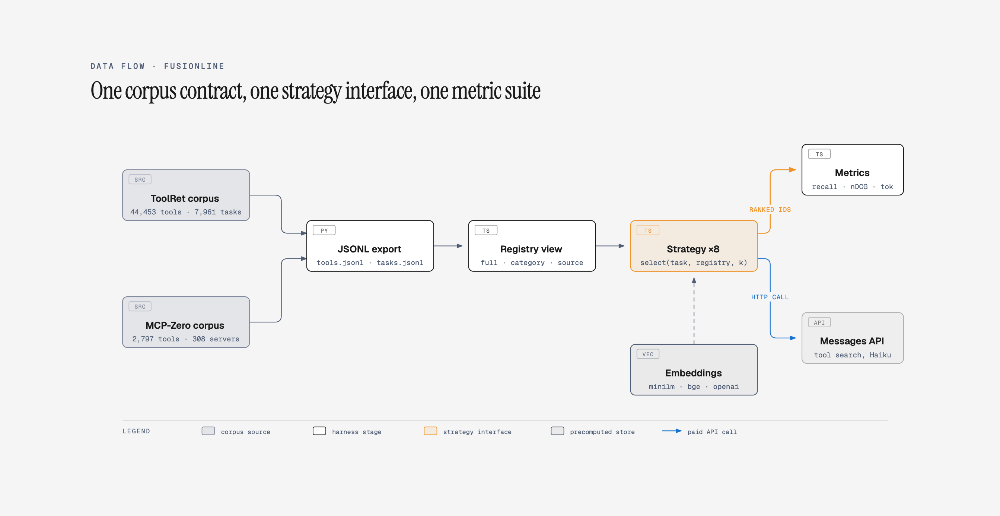
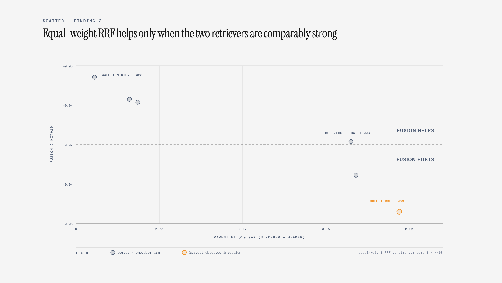

FusionLine: Where Equal-Weight Retrieval Fusion Stops Helping in MCP Tool Selection
Code
The problem
An MCP agent that connects to a registry of tools faces a boring-sounding choice: which tool definitions go into the prompt. When the registry has a dozen of tools, the answer is all of them. When it has forty-four thousand, the answer determines both whether the agent finds what it needs and what the request costs. Every serious MCP deployment now ships a router for this, and almost every router ships a benchmark number.
The problem is that none of those numbers are comparable. Anthropic's Tool Search Tool, Stacklok's MCP Optimizer, StackOne's tool discovery, the mcp-ts router, and a shelf of academic systems (ToolRet, MCP-Zero, HGMF) each report accuracy on a different corpus, at a different registry size, with different metrics. A vendor that reports 90% selection accuracy over a 500-tool catalog is not answering the same question as a retriever evaluated over 44,000 tools, and no public artifact forces them to answer the same question.
So instead of building another router, I built the referee: FusionLine. Which is a TypeScript benchmark harness that runs eight tool-selection strategies against the same registries, the same tasks, and the same metric suite, and reports retrieval quality, token cost, and latency side by side. It produced four findings that each survived a replication or a sanity check, and one honest negative.
What the harness measures
The primary corpus is ToolRet: 44,453 tools and 7,961 labeled tasks drawn from 35 source configurations (web
APIs, code libraries, customized tools). Ground truth joins are exact (labels[].id to
tools.id, verified 100%), and many tasks label a set of tools, so the metrics are
set-aware: recall@k, hit@k, set-F1, nDCG@k, MRR@k, plus estimated prompt tokens and wall-clock latency.
Every strategy implements one interface, select(task, registry, k), and every task is evaluated
under three registry exposures: the full catalog (44K tools), the task's
category pool (3.4K to 37K), and its native source pool (54 to 16K). The
strategies under test:
all: dump every tool definition into the prompt (the upper bound)random: uniform sample (the lower bound)bm25: lexical ranking over tool names, descriptions, and parametersembed: dense retrieval with precomputed sentence embeddings (MiniLM-384, or the ToolRet-trained BGE-large model)hybrid: reciprocal rank fusion of the bm25 and embed rankings, equal weighthybridw: the same fusion with a tunable weight (0.3 bm25 / 0.7 dense)setaware: a HYSET-style label-co-occurrence baseline, trained on a held-out half of each source's tasks to avoid transductive leakageanthropic: the managed Tool Search Tool over the live Messages API

The whole matrix is about 693K evaluation rows across six CSV files. MCP-Zero's published corpus (308 real MCP servers, 2,797 tools) serves as an out-of-domain transfer check: each server's capability summary becomes a task, and that server's tools become the label set.
Finding 1: pool size decides more than the method
The same equal-weight hybrid, same tasks, same metrics, three registry sizes, plus the MCP-Zero transfer corpus:

| Registry (pool size) | bm25 hit@10 | embed hit@10 | hybrid hit@10 |
|---|---|---|---|
| source pools (54–16K tools) | .649 | .700 | .731 |
| category pools (3.4–37K) | .486 | .506 | .573 |
| full catalog (44K) | .446 | .457 | .525 |
All numbers are without task instructions. Adding ToolRet's instruction field lifts every cell by 8 to 10 points (hybrid reaches .619 on the full catalog), which independently reproduces the instruction sensitivity that ToolRet's own authors report.
The cost side needs an honest denominator. The all baseline pays 7.8M estimated tokens per query on
the full catalog against ~2K for a k=10 selection, a 4,750x reduction no real deployment would ever pay. At
realistic pool sizes the number is smaller, dumping the median source pool costs 133K tokens, so routing buys
about 46x (the mean is 274x, inflated by a few oversized pools). And below roughly a dozen
tools, dumping wins outright, since a k=10 selection costs about as many tokens as the whole catalog anyway.
Finding 2: hybrid fusion has a boundary, and it is sharp
Equal-weight RRF beats both parents at every cell of the MiniLM matrix, by as much as +8pp hit@10 over the better parent. Then I swapped the dense retriever for ToolRet's own trained BGE model, and the result inverted:
| Strategy (full catalog, k=10) | w/o inst hit | w/ inst hit |
|---|---|---|
| embed (BGE) | .614 | .733 |
| hybrid (equal RRF) | .583 | .665 |
| hybridw (0.3 bm25 / 0.7 dense) | .626 | .726 |
Fusing a strong dense ranker with a weak bm25 signal does not average the two; it drags the strong one down. Down-weighting bm25 recovers the loss and edges past the dense retriever alone by 1-2pp.
The transfer check made this sharper rather than noisier. On MCP-Zero, the bundled OpenAI embeddings are the weak parent (.692 vs bm25's .857), and the mirror image holds: equal-weight fusion adds nothing (.860) and dense-favored weighting hurts (.838), while comparable parents (MiniLM .825, bm25 .857) fuse cleanly to .903. The rule is symmetric in which parent is weak:
- parent hit@10 gap under ~0.04: fusion gains +4 to +7pp
- gap over ~0.16: fusion is neutral to harmful, and the fix is weighting toward the stronger parent, not equal fusion

Hybrid-by-default is the common vendor design. The data says that design has a measurable boundary condition, and it is easy to check before shipping if your two retrievers differ by more than ~0.15 on your own corpus, equal RRF is costing you accuracy.
Finding 3: managed tool search is single-shot BM25 with a billing model
I ran Anthropic's server-side BM25 search tool on 100 tasks against the 3,367-tool customized pool, on
Haiku 4.5, with a hard $1.50 spend cap (due to budget constraints) built into the strategy. Total
spend: $0.55. The harness verified the mechanism from raw responses rather than documentation: the exact model
snapshot claude-haiku-4-5-20251001 answered, server_tool_use and
tool_search_tool_result blocks show the search genuinely running, and 1,755 input tokens per call
on a 3,367-tool request confirms deferred
schemas are never billed as context.
| Strategy (customized pool, k=10) | hit | recall | nDCG | latency |
|---|---|---|---|---|
| anthropic (managed, agentic) | .520 | .423 | .341 | 5.7 s |
| bm25 (60 lines, local) | .530 | .470 | .401 | 2 ms |
| embed (BGE, local) | .770 | .701 | .554 | 7 ms |
The managed service lands at or slightly below a local BM25 on the same pool, roughly 800x slower and ~$0.005 per task. Two honest cautions are: the API returns at most ~5 tools per search, so part of its recall gap is discovery depth rather than ranking quality; and documentation as late as July 2026 claims Haiku lacks tool-search support, yet the call worked with no beta header, so support was apparently extended since.
The other result is a hard ceiling, not a tuning knob: the API accepts a maximum of 10,000 deferred tools per request. The full 44K catalog cannot be served at all. For a managed tool-search product, the largest realistic MCP registries are simply out of scope today.
Finding 4: set-aware signals exist, but naive co-occurrence is too sparse
ToolRet labels are sets, and the failure analysis below shows set recovery is where methods fail, so a set-aware
baseline was worth testing honestly. The setaware strategy builds a tool-pair co-occurrence table
from one half of each source's tasks and evaluates on the held-out half, avoiding the transductive trap of
training on test labels.
Result: a consistent but tiny +1pp recall over the hybrid base at every registry mode. The reason is structural, ~4K training label-sets spread over 44K tools leave almost no co-occurrence mass. This is a negative result in favor of the framing, not against it. The raw co-occurrence is exactly why HYSET-style methods need a learned hyperedge model rather than a lookup table.
What is left after every method is tried
Across the full catalog at k=10, 41% of tasks are missed by every retriever. That shared-miss mass is the most interesting number in the project, because it is not attributable to any single method's weakness.
- Multi-tool tasks get a higher hit@10 (.594) than single-tool tasks but a much lower recall@10 (.344 vs .468). Finding some of the required set is easy; recovering the complete set is the actual problem, and it is the metric nobody's headline number reports.
- Per-source spread is enormous: gpt4tools scores a perfect 1.000 hit@10 while toolbench-sam scores .107. I
checked toolbench-sam by hand rather than trusting the number: all 197 queries join to real tools, and the
documentation is genuinely adversarial (code-style references like
API.set_locationanswering natural-language housing queries). The low score is a domain gap, not a label bug. - bm25 and embed fail on different tasks: dense wins on multi-tool tasks, lexical wins on single-tool ones, which is the mechanical reason fusion helps when the parents are comparably strong.
Limitations
- The MCP-Zero OpenAI embeddings were computed by the dataset authors over short tool descriptions while queries are paragraph-length summaries, so “OpenAI is the weak parent” is partly a domain gap, not a verdict on the embedder.
setawareis a co-occurrence approximation of HYSET, not the published model; no public HYSET implementation exists to port faithfully.- Anthropic results are a 100-task calibration on one pool and one cheap model by design (the budget was $2.50 total). Scaling to all modes needs a real budget and the Batch API.
- ToolRet labels describe tool relevance; they do not verify that a call sequence would actually solve the task.
The artifact
FusionLine is a few hundreds lines of TypeScript plus two Python data-prep scripts. The harness, the result CSVs, and the per-run logs are in the repository. The eval loop streams rows incrementally with a per-strategy spend cap, so the paid-API runs are reproducible down to the dollar, with the entire Anthropic experiment cost $0.55 and the script to re-run it takes one env var.
The honest summary of everything above is as: when someone next publishes a tool-selection number, the two questions worth asking are how big was the pool and how close were the parents. Both are one command against a shared corpus, which was the point of building the harness in the first place.
If you work on MCP tool routing and see something that contradicts your production numbers than mine, I would genuinely like to hear about it. Please reach out to me at taneemishere@gmail.com.